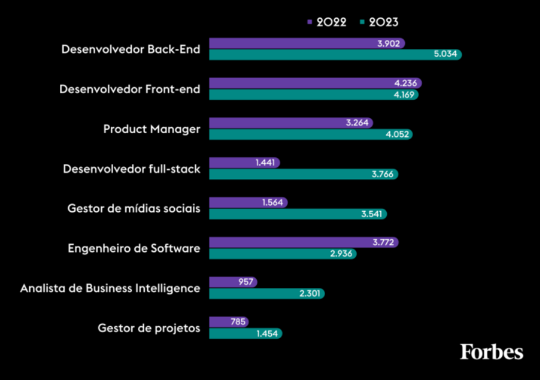

Apesar das recorrentes demissões em Big Techs e startups, o mercado brasileiro de tecnologias da informação e comunicação (TIC) crescerá 5% em 2023, chegando a valer US$ 80 bilhões, segundo um novo levantamento da consultoria IDC.
O avanço do setor se deve à expansão do 5G e o contínuo movimento de transformação digital em diferentes segmentos. Separadamente, a previsão do IDC é de que o setor de telecomunicações cresça 3% e que o de T.I. cresça 6,2%. Sozinho, o Brasil representa 38% dos investimentos em T.I. na América Latina.
Confira algumas das profissões da área tech mais buscadas pelos empregadores em 2022 e 2023, segundo o levantamento da Cortex, e a quantidade de vagas ofertadas: 
Leia mais em: https://forbes.com.br/carreira/2023/01/mercado-tech-continua-aquecido-apesar-das-demissoes/
Eu crirei esse blog pra te mostrar como o crescimento exponencial da área de tecnologia beneficia empresas e profissionais em busca de oportunidades, com isso eu te pergunto: Tá esperando o que pra me por no seu time? Vamo nessa, juntos!